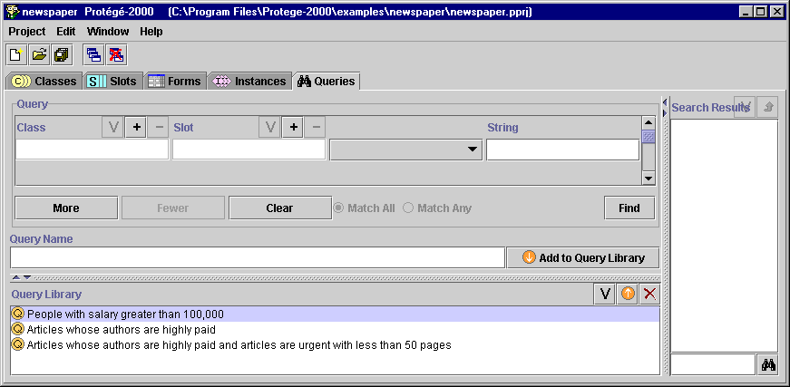

The Queries tab allows you to create, run, and save queries, which are a way to select instances from your project base on the values of one or more slots. Queries are not part of your knowledge base, but are a way to identify the instances in your project, based on class and slot properties.
The Queries Tab consists of three panes:
Note: If you are working on a smaller screen, you may not see all of these panes. To view or enlarge the Query Library pane, drag the slider bar near the bottom of the Query Tab. To view or enlarge the Search Results Pane, drag the slider bar at the right side of the window. See Working With a Small Window for more information.

Next: The Query Pane